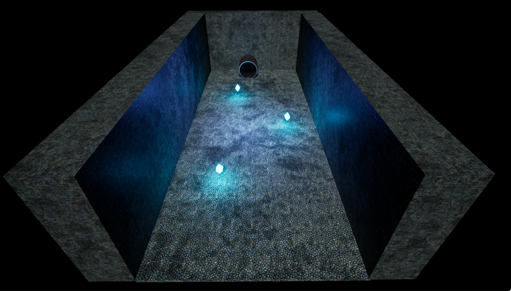

Hi! I'm Tim Watters, and I'm a game design and development enthusiast. I'm about to finish my
bachelors degree in Animation and Game Design from Curtin University, and I'm ready to move on to bigger
projects.
Below you'll find an assortment of my personal projects, built using different engines such as the
Unreal and Godot engines. I've also done some 3D work in
Blender and in Maya. I also have some programming experience in
Java, C#, and C++. And lastly I coded this website! So
I'm familiar HTML, CSS, and JavaScript.
Personal Game Projects
Coin Dash
I call this first project Coin Dash. It was created in Godot using GDScript.
To get started with this engine, I followed a course by Packt. The assets are not my own, being taken from Packt
resources. Even though I began by following a course, the course was out of date with the current version of
Godot at the time that I decided to embark on my journey. I also made variations to the original code in ways I
believed improved the original gameplay. I had to develop fundemental game coding skills in this project.
Jungle Jump
This next project is called Jungle Jump. This was also built in the Godot engine using
GDScript.
This was also based on a project by Packt. As such, the assets are not my own.
Similar to in Coin Dash I took the premise offered by the Packt tutorial and extended it. Trying to find
creative uses for the different components created an interesting challenge that I enjoyed solving. This project
taught me the basics of 2D physics required to make a platformer.
Space Rocks
Space Rocks was also built in Godot using GDScript.
This project was
also
based on the Godot project book from Packt that the pevious Godot projects were from. As such, the assets aren't
mine. Moving on to more fun things though, I had a lot of fun with this project. I made sure to follow the book
less closely with this one to try and practice the skills I'd picked up so far, but to also see how much I could
figure out from subheadings. This project was very fun, and I learned a lot in 2D physics while developing this
game.
Marble Maze
Marble Maze was my first project built in Unreal. I used the Blueprint system
to program it.
The system tilts the maze based on mouse movement and got me started with using physics in 3D
space. The assets are default assets from the Unreal starter content.
Marble Run
Marble Run was also made in Unreal using Blueprint.
The moving camera in
the
project allowed me to make more interesting choices in the level design. I could also improve my skills in the
prototyping and rapid mockup of levels when using Unreal. It felt like this project did a lot to refine existing
skills and practices from previous projects.

Game Testing
13th Age 2e Playtest
My gaming interests spread to tabletop as well. Towards the end of 2022, I got the opportunity to participate
in the playtest for the second edition of the TTRPG 13th Age. The format of the test was to email a specified
email address with our feedback after running some test sessions.
Tekken 8 CBT
I recently was one of the fortunate people who received a code to participate in the Tekken 8 Closed Beta Test.
It ran from October 20th to October 23rd, and I had a great time. After three days of participating in the beta
Bandai Namco sent out survey emails to collect peoples thought and experiences on the beta.